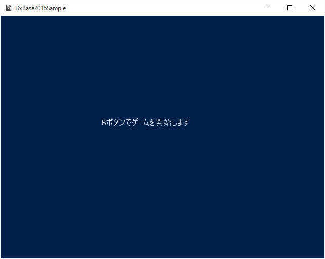
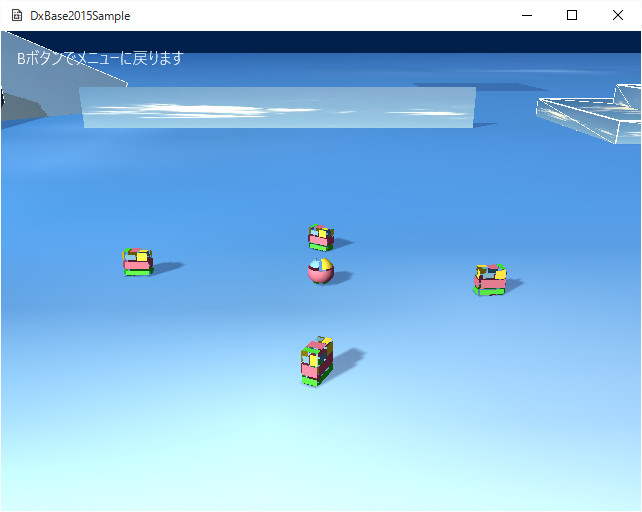

３１２．ステージ操作
複数のステージの必要性
ゲームは、たとえば
メニュー、リザルト画面、クリア画面、ゲームオーバー画面など、複数のステージで構成されています。
このようなインターフェイスを用意することで、ユーザーに、ゲームの結果を報告したり、あるいは次に行うべきことを提示したりできます。
同じゲームでもそのあたりのインターフェイスが充実しているのとないのでは、ユーザーの満足度も違います。
Sample312は
ステージ操作です。実は
Sample307のSpriteStdioを使ったメニューでも
ステージ操作は実装されていますが、このサンプルでは、抜き出して説明します。
Sample312のソリューションを開き、リビルド、実行すると以下の画面が現れます。

図3012a
この画面にあるように、コントローラのBボタンを押すと以下の画面になります。チュートリアル008と同じものです。

図3012b
ここでBボタンを押すと、最初の画面に戻ります。
単純な例ですが、これが
ステージ操作です。
メニューステージの作成
まず
メニューステージを作成します。ここでは
GameStage.cppに記述してあります。
実際にチーム制作などでステージを構成する場合は、別ファイルにして、たとえば
MenuStage.hと>MenuStage.cppを記述する（この場合、新しいヘッダをProject.hに追記を忘れないようにする）方がいいでしょう。
以下は、ビューを作成しているところです。
void MenuStage::CreateViews(){
//最初にデフォルトのレンダリングターゲット類を作成する
CreateDefaultRenderTargets();
//マルチビューコンポーネントの取得
auto PtrMultiView = GetComponent<MultiView>();
//マルチビューにビューの追加
auto PtrView = PtrMultiView->AddView();
//ビューの矩形を設定（ゲームサイズ全体）
Rect2D<float> rect(0, 0, (float)App::GetApp()->GetGameWidth(), (float)App::GetApp()->GetGameHeight());
//最初のビューにパラメータの設定
PtrView->ResetParamaters<LookAtCamera, MultiLight>(rect, Color4(0.0f, 0.125f, 0.3f, 1.0f), 1, 0.0f, 1.0f);
//0番目のビューのカメラを得る
auto PtrCamera = GetCamera(0);
PtrCamera->SetEye(Vector3(0.0f, 0.0f, -5.0f));
PtrCamera->SetAt(Vector3(0.0f, 0.0f, 0.0f));
}
ここでは、カメラを設定していますが、スプライトだけなので（文字列はスプライトです）、カメラはどこを向いていても構いません。ただ。今後、３Ｄの何らかのオブジェクトを実装した場合、カメラがその方向を向いてないと表示されないので、一応、SetEye()とSetAt()を記述しておきます。
文字列は、以下のように、
MenuStageに直接コンポーネント実装します。
void MenuStage::CreateString(){
//文字列をつける
auto PtrString = AddComponent<StringSprite>();
PtrString->SetText(L"Bボタンでゲームを開始します");
Rect2D<float> rect(0, 0, 200, 200);
rect += Point2D<float>(200,200);
PtrString->SetTextRect(rect);
}
シーンでの操作
メニューステージができたところで、
最初にメニューステージを表示するように記述しなければなりません。そのためには
Scene.cppに記述します。
DxBase2015では、1つのゲームに対して、
1つのアプリケーション（Appクラス）、1つのシーン（Sceneクラス）と、複数のステージ（GameStageやMenuStage）で構成されます。
ステージを管理するのは
Sceneクラスです（Scene.h、cpp）。
その
Create()関数に以下のように記述します。
void Scene::Create(){
try{
//最初のアクティブステージの設定
ResetActiveStage<MenuStage>();
}
catch (...){
throw;
}
}
こうしておくと、起動直後に
MenuStageがまず実装されます。
ステージの切り替え
このように、
ステージ操作はシーンで行うわけですが、どのタイミングでステージが終了して切り替わるかはゲームによります。
そのため、ステージを切り替えるためには、シーンに対して
イベントを送るようにします。イベントについては
サンプル106に説明があります。
ここでは、まずイベントを受け取る側（つまりシーン）が何を行うかを実装します。以下がシーンの
OnEvent()関数です。
void Scene::OnEvent(const shared_ptr<Event>& event)
{
if (event->m_MsgStr == L"ToGame"){
ResetActiveStage<GameStage>();
}
if (event->m_MsgStr == L"ToMenu"){
ResetActiveStage<MenuStage>();
}
}
これは実体なので、記述の前にヘッダファイル（Scene.h）で、
OnEvent()の多重定義宣言を記述しなければなりませんのでお忘れなく。
ここでは、イベントの内容によって、メニューを起動するか、ゲームステージを起動するかを振り分けています。
イベントの送出
では
ステージ切り替えのイベントはどのように発行してるのでしょうか？
メニューステージ側では、ステージの
Update()関数で行ってます。
void MenuStage::Update(){
//コントローラ情報の取得.
auto CntlVec = App::GetApp()->GetInputDevice().GetControlerVec();
//Bボタンが押されたら.
if (CntlVec[0].wPressedButtons & XINPUT_GAMEPAD_B) {
//イベント送出
PostEvent(0.0f, GetThis<MenuStage>(), App::GetApp()->GetSceneBase(), L"ToGame");
}
}
ここでは、必ず
PostEvent()関数を使います。ステージ切り替えは慎重に行われなければなりません。
SendEvent()関数で行うと、シーンが終了すべきステージから新しいステージに切り替えるときは、まだ、終了すべきステージのオブジェクトが生きています（というより終了すべきステージの中の関数から呼ばれるので、リターンしたときにオブジェクトが存在しなくなってしまいます）。
それに対して
PostEvent()関数は、次のターンまで処理を待ちますので、ターンの冒頭で（ステージに制御が渡る前）に、終了ステージを破棄しますので、問題なく推移します。
ゲームステージ側のイベント送出は
プレイヤーのUpdate3()関数で行ってます。PostEvent()を送るので、どのオブジェクトから送っても問題はありません。
ステージ切り替えの内部の動き
先ほど、
どのオブジェクトから送っても問題はありませんと書きましたが、これは、
ヌルポインタアクセスなどの致命的なことにはならないということであり、設計によっては、
無駄なステージ切り替えが起こる可能性がるので、内部の（ライブラリ内の）動きを説明しながら、考えられる問題点について述べます。
多くのゲームの場合、たとえば
時間切れになるか、敵に当たるとゲームオーバーのような処理になります。これをどのように実装するかですが、たとえばゲームステージ内のいくつものオブジェクトから、シーンに対して
ゲームオーバーに移行しなさいというイベントが発行されるとします。
これが、違うターンで発行されるのであれば、最初のイベントで、ステージは切り替わりますので、
早い者勝ち的な処理になります。
しかしたまたま、同じターン内で、二つ以上のイベントが送られたら、それらの実行は次のターンの冒頭なので、2回、ステージ切り替えが起こることになります。
シーンでは、アクティブなステージのポインタ（スマートポインタshared_ptr）を1つ保持しています。
新しいステージの読み込みは、最初にステージを構築した後、アクティブなスマートポインタを上書きします。その時に、スマートポインタの仕様により、もとのステージは破棄されます。それで、もう一回、同じステージに移行しなさいとイベントが来た場合、構築したばかりのステージを破棄して、また、新しいステージを構築する形になります。つまり1回無駄にステージを構築することになります。
しかし、2つのイベントが同じステージに移行するイベントであればまだ、見た目はあまり変わらない（実行時間は変わるが）、気が付かないで終わるかもしれませんが、別のステージに移行せよというイベントが、同じターンで複数発行された場合、話はややこしくなります。
つまり、クリアしたはずなのにゲームオーバーになってしまった、のような現象が出てくる可能性があります。
60秒分の1の話なので、それも、同じターンで2つ以上イベントが来た場合のことですが、結構あなどってはいけません。
そんな場合は、シーン側で、1ターンに1個しかステージ切り替えのイベントに対応しないように記述します。具体的には、たとえばフラグを使うとか、メンバ変数でイベントの数を数えるとか。いろいろ方法はあると思いますが、このような処理は、なかなか見えてこないので、プログラマがある程度現象を予想して、記述しましょう。（サンプルには、そういった処理の記述はありません）